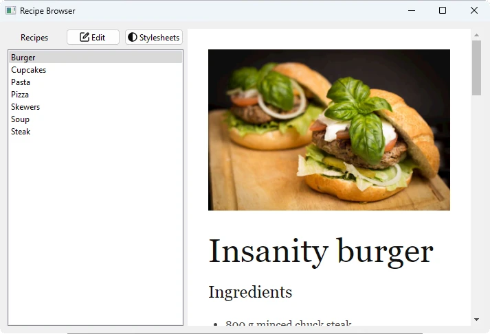

Recipe Browser
Injecting custom stylsheets into web pages and providing a rich text preview tool for a custom markup language.

Recipe Browser is a small hybrid web browser application. It demonstrates how to use the Qt WebEngine C++ classes to combine C++ and JavaScript logic in the following ways.
- Running arbitrary JavaScript code via
QWebEnginePage::runJavaScript()to inject custom CSS stylesheets - Using QWebEngineScript and QWebEngineScriptCollection to persist the JavaScript code and inject it to every page
- Using QWebChannel to interact with and provide a rich text preview for a custom markup language
Markdown is a lightweight markup language with a plain text formatting syntax. Some services, such as github, acknowledge the format, and render the content as rich text when viewed in a browser.
The Recipe Browser main window is split into a navigation on the left and a preview area on the right. The preview area on the right switches to an editor when the user clicks the Edit button on the top left of the main window. The editor supports the Markdown syntax and is implemented by using QPlainTextEdit. The document is rendered as rich text in the preview area, once the user clicks the View button,to which the Edit button transforms to. This rendering is implemented by using QWebEngineView. To render the text, a JavaScript library inside the web engine converts the Markdown text to HTML. The preview is updated from the editor through QWebChannel.
Running the Example
To run the example from Qt Creator, open the Welcome mode and select the example from Examples. For more information, visit Building and Running an Example.
Exposing Document Text
To render the current Markdown text it needs to be exposed to the web engine through QWebChannel. To achieve this it has to be part of Qt metatype system. This is done by using a dedicated Document class that exposes the document text as a Q_PROPERTY:
class Document : public QObject { Q_OBJECT Q_PROPERTY(QString text MEMBER m_currentText NOTIFY textChanged FINAL) public: explicit Document(QObject *parent = nullptr); void setTextEdit(QPlainTextEdit *textEdit); void setCurrentPage(const QString &page); public slots: void setInitialText(const QString &text); void setText(const QString &text); signals: void textChanged(const QString &text); private: QPlainTextEdit *m_textEdit; QString m_currentText; QString m_currentPage; QMap<QString, QString> m_textCollection; };
The Document class wraps a QString m_currentText to be set on the C++ side with the setText() method and exposes it at runtime as a text property with a textChanged signal. We define the setText method as follows:
void Document::setText(const QString &text) { if (text == m_currentText) return; m_currentText = text; emit textChanged(m_currentText); QSettings settings; settings.beginGroup("textCollection"); settings.setValue(m_currentPage, text); m_textCollection.insert(m_currentPage, text); settings.endGroup(); }
Additionally, the Document class keeps track of the current recipe via m_currentPage. We call the recipes pages here, because each recipe has its distinct HTML document that contains the initial text content. Furthermore, m_textCollection is a QMap<QString, QString> that contains the key/value pairs {page, text}, so that changes made to the text content of a page is persisted between navigation. Nevertheless, we do not write the modified text contents to the drive, but instead we persist them between application start and shutdown via QSettings.
Creating the Main Window
The MainWindow class inherits the QMainWindow class:
class MainWindow : public QMainWindow { Q_OBJECT public: explicit MainWindow(QWidget *parent = nullptr); ~MainWindow(); void insertStyleSheet(const QString &name, const QString &source, bool immediately); void removeStyleSheet(const QString &name, bool immediately); bool hasStyleSheet(const QString &name); void loadDefaultStyleSheets(); private slots: void showStyleSheetsDialog(); void toggleEditView(); private: Ui::MainWindow *ui; bool m_isEditMode; Document m_content; };
The class declares private slots that match the two buttons on the top left, over the navigation list view. Additionally, helper methods for custom CSS stylesheets are declared.
The actual layout of the main window is specified in a .ui file. The widgets and actions are available at runtime in the ui member variable.
m_isEditMode is a boolean that toggles between the editor and the preview area. m_content is an instance of the Document class.
The actual setup of the different objects is done in the MainWindow constructor:
MainWindow::MainWindow(QWidget *parent) : QMainWindow(parent), ui(new Ui::MainWindow), m_isEditMode(false) { ui->setupUi(this); ui->textEdit->setFont(QFontDatabase::systemFont(QFontDatabase::FixedFont)); ui->textEdit->hide(); ui->webEngineView->setContextMenuPolicy(Qt::NoContextMenu);
The constructor first calls setupUi to construct the widgets and menu actions according to the UI file. The text editor font is set to one with a fixed character width, and the QWebEngineView widget is told not to show a context menu. Furthermore, the editor is hidden away.
connect(ui->stylesheetsButton, &QPushButton::clicked, this, &MainWindow::showStyleSheetsDialog);
connect(ui->editViewButton, &QPushButton::clicked, this, &MainWindow::toggleEditView);
Here the clicked signals of QPushButton are connected to respective functions that show the stylesheets dialog or toggle between edit and view mode, that is, hide and show the editor and preview area respectively.
ui->recipes->insertItem(0, "Burger");
ui->recipes->insertItem(1, "Cupcakes");
ui->recipes->insertItem(2, "Pasta");
ui->recipes->insertItem(3, "Pizza");
ui->recipes->insertItem(4, "Skewers");
ui->recipes->insertItem(5, "Soup");
ui->recipes->insertItem(6, "Steak");
connect(ui->recipes, &QListWidget::currentItemChanged, this,
[this](QListWidgetItem *current, QListWidgetItem * /* previous */) {
const QString page = current->text().toLower();
const QString url = QStringLiteral("qrc:/pages/") + page + QStringLiteral(".html");
ui->webEngineView->setUrl(QUrl(url));
m_content.setCurrentPage(page);
});
Here the navigation QListWidget on the left is setup with the 7 recipes. Also, the currentItemChanged signal of QListWidget is connected to a lambda that loads the new, current recipe page and updates the page in m_content.
m_content.setTextEdit(ui->textEdit);
Next, the pointer to the ui editor, a QPlainTextEdit, is passed to m_content to ensure that calls to Document::setInitialText() work properly.
connect(ui->textEdit, &QPlainTextEdit::textChanged, this,
[this]() { m_content.setText(ui->textEdit->toPlainText()); });
QWebChannel *channel = new QWebChannel(this);
channel->registerObject(QStringLiteral("content"), &m_content);
ui->webEngineView->page()->setWebChannel(channel);
Here the textChanged signal of the editor is connected to a lambda that updates the text in m_content. This object is then exposed to the JS side by QWebChannel under the name content.
QSettings settings;
settings.beginGroup("styleSheets");
QStringList styleSheets = settings.allKeys();
if (styleSheets.empty()) {
// Add back default style sheets if the user cleared them out
loadDefaultStyleSheets();
} else {
for (const auto &name : std::as_const(styleSheets)) {
StyleSheet styleSheet = settings.value(name).value<StyleSheet>();
if (styleSheet.second)
insertStyleSheet(name, styleSheet.first, false);
}
}
settings.endGroup();
By using QSettings we persist stylesheets between application runs. If there should be no stylesheets configured, for example, because the user deleted all of them in a previous run, we load default ones.
ui->recipes->setCurrentItem(ui->recipes->item(0));
Finally, we set the currently selected list item to the first contained in the navigation list widget. This triggers the previously mentioned QListWidget::currentItemChanged signal and navigates to the page of the list item.
Working With Stylesheets
We use JavaScript to create and append CSS elements to the documents. After declaring the script source, QWebEnginePage::runJavaScript() can run it immediately and apply newly created styles on the current content of the web view. Encapsulating the script into a QWebEngineScript and adding it to the script collection of QWebEnginePage makes its effect permanent.
void MainWindow::insertStyleSheet(const QString &name, const QString &source, bool immediately) { QWebEngineScript script; QString s = QString::fromLatin1("(function() {" " css = document.createElement('style');" " css.type = 'text/css';" " css.id = '%1';" " document.head.appendChild(css);" " css.innerText = '%2';" "})()") .arg(name, source.simplified()); if (immediately) ui->webEngineView->page()->runJavaScript(s, QWebEngineScript::ApplicationWorld); script.setName(name); script.setSourceCode(s); script.setInjectionPoint(QWebEngineScript::DocumentReady); script.setRunsOnSubFrames(true); script.setWorldId(QWebEngineScript::ApplicationWorld); ui->webEngineView->page()->scripts().insert(script); }
Removing stylesheets can be done similarly:
void MainWindow::removeStyleSheet(const QString &name, bool immediately) { QString s = QString::fromLatin1("(function() {" " var element = document.getElementById('%1');" " element.outerHTML = '';" " delete element;" "})()") .arg(name); if (immediately) ui->webEngineView->page()->runJavaScript(s, QWebEngineScript::ApplicationWorld); const QList<QWebEngineScript> scripts = ui->webEngineView->page()->scripts().find(name); if (!scripts.isEmpty()) ui->webEngineView->page()->scripts().remove(scripts.first()); }
Creating a recipe file
<!doctype html>
<html lang="en">
<head>
<meta charset="utf-8">
<title>Insanity Burger</title>
<link rel="stylesheet" type="text/css" href="../3rdparty/markdown.css">
<link rel="stylesheet" type="text/css" href="../custom.css">
<script src="../3rdparty/marked.js"></script>
<script src="../custom.js"></script>
<script src="qrc:/qtwebchannel/qwebchannel.js"></script>
</head>
<body>
<div id="placeholder"></div>
<div id="content">
<img src="images/burger.jpg" alt="Insanity Burger" title="Insanity Burger" />
Insanity burger
===============
### Ingredients
* 800 g minced chuck steak
* olive oil
* 1 large red onion
* 1 splash of white wine vinegar
* 2 large gherkins
* 4 sesame-topped brioche burger buns
* 4-8 rashers of smoked streaky bacon
* 4 teaspoons American mustard
* Tabasco Chipotle sauce
* 4 thin slices of Red Leicester cheese
* 4 teaspoons tomato ketchup
#### For the burger sauce
* ¼ of an iceberg lettuce
* 2 heaped tablespoons mayonnaise
* 1 heaped tablespoon tomato ketchup
* 1 teaspoon Tabasco Chipotle sauce
* 1 teaspoon Worcestershire sauce
* 1 teaspoon brandy, or bourbon (optional)
### Instructions
For the best burger, go to your butcher’s and ask them to mince 800g of chuck steak for you.
This cut has a really good balance of fat and flavoursome meat. Divide it into 4 and, with wet
hands, roll each piece into a ball, then press into flat patties roughly 12cm wide and about 2cm
wider than your buns. Place on an oiled plate and chill in the fridge. Next, finely slice the red
onion, then dress in a bowl with the vinegar and a pinch of sea salt. Slice the gherkins and halve
the buns. Finely chop the lettuce and mix with the rest of the burger sauce ingredients in a bowl,
then season to taste.
I like to only cook 2 burgers at a time to achieve perfection, so get two pans on the go – a large
non-stick pan on a high heat for your burgers and another on a medium heat for the bacon. Pat your
burgers with oil and season them with salt and pepper. Put 2 burgers into the first pan, pressing
down on them with a fish slice, then put half the bacon into the other pan. After 1 minute, flip
the burgers and brush each cooked side with ½ a teaspoon of mustard and a dash of Tabasco. After
another minute, flip onto the mustard side and brush again with another ½ teaspoon of mustard and
a second dash of Tabasco on the other side. Cook for one more minute, by which point you can place
some crispy bacon on top of each burger with a slice of cheese. Add a tiny splash of water to the
pan and place a heatproof bowl over the burgers to melt the cheese – 30 seconds should do it. At the
same time, toast 2 split buns in the bacon fat in the other pan until lightly golden. Repeat with
the remaining two burgers.
To build each burger, add a quarter of the burger sauce to the bun base, then top with a cheesy
bacon burger, a quarter of the onions and gherkins. Rub the bun top with a teaspoon of ketchup,
then gently press together. As the burger rests, juices will soak into the bun, so serve right
away, which is great, or for an extra filthy experience, wrap each one in greaseproof paper, then
give it a minute to go gorgeous and sloppy.
**Enjoy!**
</div><!--End of content-->
<script>
'use strict';
var jsContent = document.getElementById('content');
var placeholder = document.getElementById('placeholder');
var updateText = function(text) {
placeholder.innerHTML = marked.parse(text);
}
new QWebChannel(qt.webChannelTransport,
function(channel) {
var content = channel.objects.content;
content.setInitialText(jsContent.innerHTML);
content.textChanged.connect(updateText);
}
);
</script>
</body>
</html>
All the different recipe pages are set up the same way.
In the <head> part they include two CSS files: markdown.css, that styles the markdown, and custom.css, that does some further styling but most importantly hides the <div> with id content, as this <div> only contains the unmodified, initial content text. Also, three JS scripts are included. marked.js is responsible for parsing the markdown and transforming it into HTML. custom.js does some configuration of marked.js, and qwebchannel.js exposes the QWebChannel JavaScript API.
In the body there are two <div> elements. The <div> with id placeholder gets the markdown text injected that is rendered and visible. The <div> with id content is hidden by custom.css and only contains the original, unmodified text content of the recipe.
Finally, on the bottom of each recipe HTML file is a script that is responsible for the communication between the C++ and JavaScript side via QWebChannel. The original, unmodified text content inside the <div> with id content is passed to the C++ side and a callback is setup that is invoked when the textChanged signal of m_content is emitted. The callback then updates the contents of the <div> placeholder with the parsed markdown.
Files and Attributions
The example bundles the following code with third-party licenses:
| Marked | MIT License |
| Markdown.css | Apache License 2.0 |